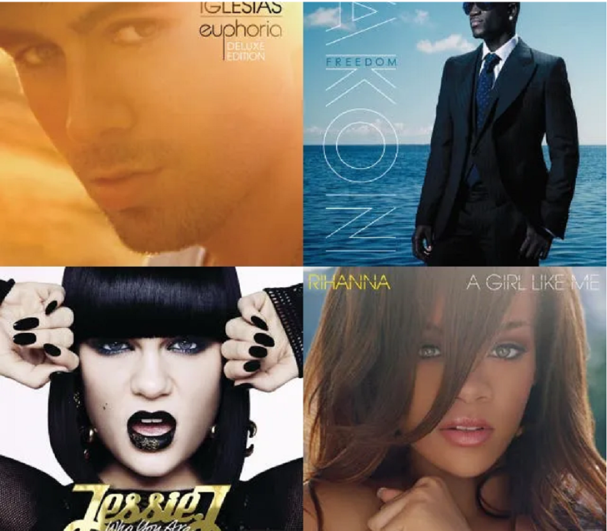

Comme dans toutes les autres décennies la musique a exercée une immense influence dans les années 2000, non seulement en France mais aussi dans le monde entier et, comme vous allez voir, c’était une décennie qui ne manquait pas de variété grâce à l’influence d’internet.
Nous allons donc vous guider dans le monde de la musique des années 2000 en vous parlant de la musique française et de la musique internationale, en passant par le rock, le pop,l’R&B et le rap.
PS : N’hesitez pas à regarder dans notre fil d’actualités pour voir où sont vos artistes preferés aujourd’hui!
